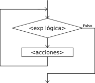

Lazos Mientras

La instrucción Mientras ejecuta una secuencia de instrucciones mientras una condición sea verdadera.
Mientras <condición> Hacer
<instrucciones>
FinMientras
Al ejecutarse esta instrucción, la condición es evaluada. Si la condición resulta verdadera, se ejecuta una vez la secuencia de instrucciones que forman el cuerpo del ciclo. Al finalizar la ejecución del cuerpo del ciclo se vuelve a evaluar la condición y, si es verdadera, la ejecución se repite. Estos pasos se repiten mientras la condición sea verdadera.
Note que las instrucciones del cuerpo del ciclo pueden no ejecutarse nunca, si al evaluar por primera vez la condición resulta ser falsa.
Si la condición siempre es verdadera, al ejecutar esta instrucción se produce un ciclo infinito. A fin de evitarlo, las instrucciones del cuerpo del ciclo deben contener alguna instrucción que modifique la o las variables involucradas en la condición, de modo que ésta sea falsificada en algún momento y así finalice la ejecución del ciclo.
El ejemplo Adivina Número le da al usuario 10 intentos para adivinar un número generado aleatoriamente, utilizando esta estructura para verificar si el usuario acierta el número o si se agotan los intentos.